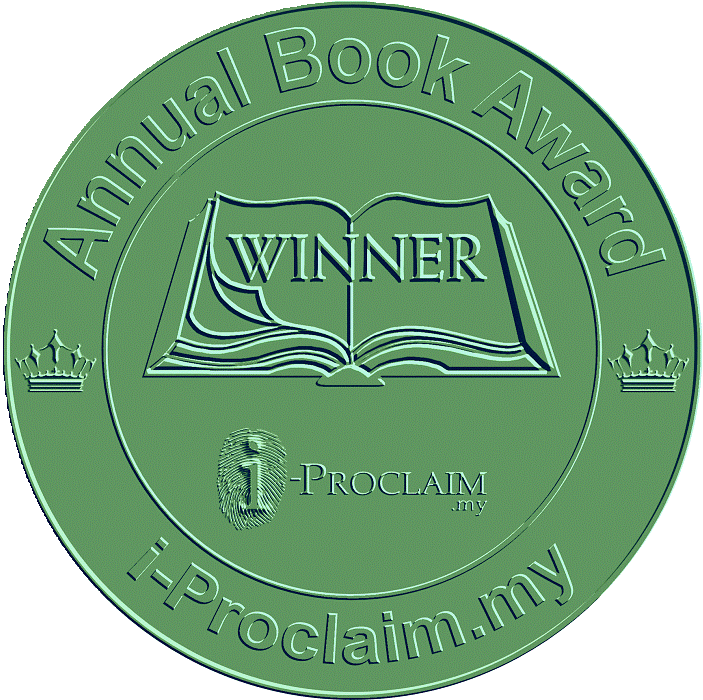

Publication link
Publisher, catalogue, bookstore, DOI or other verifiable online record.
Recognising books with intellectual value, clear contribution and lasting relevance. Apply online from any country at any time.

Publisher, catalogue, bookstore, DOI or other verifiable online record.
A clear front-cover image and complete bibliographic information.
Contents, synopsis and an appropriate sample for initial assessment.
Only when requested by the judging team for further review.
Bibliographic details, cover and publication status are confirmed.
Scope, originality, clarity and contribution are assessed.
A full manuscript or print copy may be requested when necessary.
Successful applicants receive the outcome and digital deliverables by message/email.
A digital certificate documenting the book's recognition.
Featuring the book title, cover, author and online publication link.
Book awardees may be acknowledged collectively at a future i-Proclaim Meet or ARA conference, without requiring attendance.
Book Awards are not tied to a specific award day, conference venue or mandatory event registration. No physical item is included in the standard package.
| Option | What it includes | Fee |
|---|---|---|
| Standard Book Award | Assessment, digital certificate and 30-second award video | US$200 |
| Optional physical award | Trophy/memento registration and delivery to the approved address | Additional US$300 |
| Optional media coverage | Prepared award story placed in a minimum of three USA online news portals | Additional US$500 |
This historical sample illustrates the certificate format used for an i-Proclaim Book Award. Current certificates may vary by award cycle and authorised signatory.
Start online and provide the verifiable materials currently available.